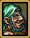

[마을]
|
 |
성 경비병
장관께서 분부하시길 너희들은 이제 언제든지 성안에 들어갈수 있다고 하셨다. |
|
청년
정말 부럽군! 예쁜 엘리스공주님을 보다니! |
|
우물가 오른쪽에 있는 아주머니
소문 들었니? 폐하께서 편찮으셨대. |
|
우물가 왼쪽에 있는 아주머니
응, 성에 있는 병사들이 말하고 있는걸 들었어. 정말인가봐! |
|
발명가
킁킁...혹시 설퍼를 보거나 냄새맡지 않았나? 나는 발명가야. 설퍼를 찾고있지. |
|
선원 1
야! 여기서 어물쩡대지마! 꺼져! |
|
선원 주위의 아주머니
미안해, 아이들아. 남편이 지금 몹시 화가나있어. 오늘 고기를 한마리도 못잡았거든. |
|
닭
꼬꼬꼬. 꼬꼬댁! |
|
어린이
새로운 애완동물가게가 열렸대. 근데 엄마는 가지 못하게 해. 왜일까? |
|
아주머니
대륙에서 온 사람들이 애완동물가게를 열었다는데. 동물들을 생포하는건 좋지 않다고 생각해. |
|
어린이 2
아, 보우이형! 나중에 나랑 같이 놀자! 약속하지? |
|
할아버지
난 네 아버지를 잘알았단다. 정말 대단한 지도자였지. 보우이, 너도 열심히 공부해 아버지같은 사람이 되야한다.
|
|
보우이의 어머니
성 경비병이 말하길 폐하께서 너를 이번일을 수행하는 적임자로 뽑으셨다는구나. 보우이, 내 아가. 폐하를 위해 일할만큼 그렇게 나이가 많이 들었나? 조심하거라, 보우이. 정말 네 아버지께서 자랑스러워하시겠구나. |
|
애완동물가게주인
어서옵쇼! 대륙에서 온 아주 진귀한 동물들을 가지고 있습니다!! 애완동물을 원하지 않는다고요? 특별히 깎아드리죠!
|
|
애완동물가게의 어린이
정말 슬프게 생겼어... 정말 안됬군. H |
|
수인1
날 당장 내보내라! 내보내지 않으면 너희들을 모두 먹어버리겠다! |
|
수인2
파르메키아에서 산책을 하고 있을때 인간들에게 붙잡혔다. |
 |
키위
나...흑...너무 배고파. 배고파.... |
|
항구쪽의 젊은이
그란실항구는 내뒤에 있어. 방금전에 배가 막 도착했지.
|
|
예언가
내가 말하는것을 잘 들으시오! 내 구슬에 폐허가 보입니다! 전쟁이에요! 그란실은 전쟁에서 패하고 말거에요! 믿으세요! |
|
소녀
저 예언가말 믿지마. 저 여자는 거짓말쟁이야. |
|  |
상인
여행을 떠나기 전에 가게에 들리지 그러나? |
|
마을입구쪽의 경비병
갈람사신은 마을을 급히 빠져나갔다. 정말 얼굴이 새파래보이던데. |
[항구]
|
|
왼쪽 선원
이건 도대체! 도대체 물고기들은 어디로 간거야?! 사장님께서 아주 화가나계시는데.
|
|
오른쪽 선원
정말 이상해... 바다가 정말 조용해. 이렇게 조용한 바다는 처음이야! |
|
고양이
야옹! |
|
고양이옆에 있는 선원
미안하다. 오늘은 줄 물고기가 없구나. 이유는 모르겠지만 한마리도 못낚았단다. |
|
배에 있는 선원
야 꼬마야! 이 배는 어부들 전용이다! 꺼져라, 멍청한 꼬마야! |